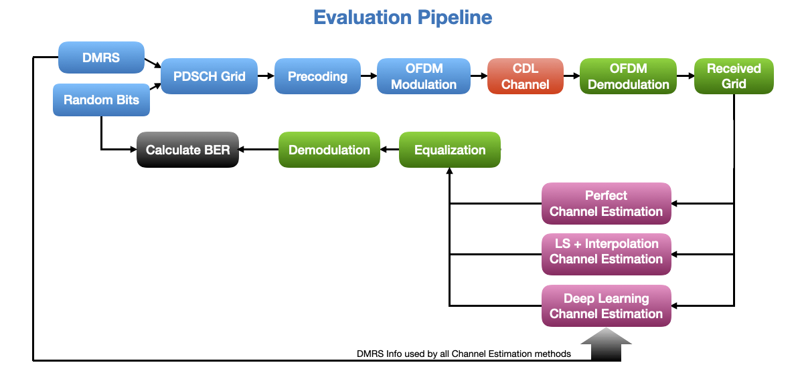

Evaluating the Trained Channel Estimator
Now that we have a trained model, we can use it in the communication pipeline and compare its performance with baselines. In this case we compare it with perfect channel estimation and NeoRadium’s Least-Square channel estimation method.
The following diagram shows the pipeline used for evaluation of our deep-learning-based channel estimator.
So, lets get started by importing some NeoRadium and Fireball modules.
[1]:
import numpy as np
import scipy.io
import time
import matplotlib.pyplot as plt
from neoradium import Carrier, PDSCH, CdlChannel, AntennaPanel, Grid, random
from fireball import Model, Block
from fireball.datasets.base import BaseDSet
Load the trained mode
Here we use the Fireball’s makeFromFile function to load the model trained and saved in the previous step.
[2]:
model = Model.makeFromFile("Models/ChEstResNet.fbm", gpus="0")
model.printLayersInfo() # Print layers
print("Model Complexity:",'{:,} flops'.format(model.getFlops())) # Print model complexity
model.initSession() # Initialize the TensorFlow session for inference
Reading from "Models/ChEstResNet.fbm" ... Done.
Creating the fireball model "ChanEst" ... Done.
Scope InShape Comments OutShape Activ. Post Act. # of Params
--------------- ------------ ----------------------- ------------ ------- --------------- -----------
IN_TENSOR 14 612 2 Tensor Shape: 14x612x2 14 612 2 None 0
S1_L1_RES2 14 612 2 2 Paths, 8 layers 14 612 64 ReLU 27,328
S1_L2_RES1 14 612 64 2 Paths, 7 layers 14 612 64 ReLU 7,904
S2_L1_CONV 14 612 64 KSP: 3 1 s 14 612 2 None L2 1,154
OUT_REG 14 612 2 14 612 2 None 0
---------------------------------------------------------------------------------------------------------
Total Number of parameters: 36,386
Model Complexity: 608,672,256 flops
Metal device set to: Apple M1 Max
mlChanEst function
The mlChanEst function in the following cell receives the DMRS information, the received resource grid, and the trained model as input. It first calculates the channel estimates at the pilot locations using LS method and then converts these estimates to a set of L x K complex matrixes that are fed to the model for inference. (L is the number of OFDM symbols per slot and K is the number of subcarriers)
The model outputs another set of L x K matrixes which contain the predicted channel information. These matrixes are then re-packaged as a 4-D complex numpy array that is returned as the estimated channel.
[3]:
def mlChanEst(dmrs, rxGrid, model):
rsGrid = rxGrid.bwp.createGrid( len(dmrs.pdsch.portSet) ) # Create an empty resource grid
dmrs.populateGrid(rsGrid) # Populate the grid with DMRS values
rsIndexes = rsGrid.getReIndexes("DMRS") # This contains the locations of DMRS values
rr, ll, kk = rxGrid.shape # Number of RX antenna, Number of symbols, Number of subcarriers
pp, ll2, kk2 = rsGrid.shape # Number of Ports (From DMRS)
if (ll!=ll2) or (kk!=kk2): raise ValueError("The Gird size (%dx%d) does not match the DMRs (%dx%d)."%(ll,kk,ll2,kk2))
modelIn = []
for p in range(pp): # For each DMRS port (i.e. each layer)
portLs = rsIndexes[1][(rsIndexes[0]==p)] # Indexes of symbols containing pilots in this port
portKs = rsIndexes[2][(rsIndexes[0]==p)] # Indexes of subcarriers containing pilots in this port
ls = np.unique(portLs) # Unique Indexes of symbols containing pilots in this port
ks = portKs[portLs==ls[0]] # Unique Indexes of subcarriers containing pilots in this port
numLs, numKs = len(ls), len(ks) # Number of OFDM symbols and number of subcarriers
pilotValues = rsGrid[p,ls,:][:,ks] # Pilot values in this port
rxValues = rxGrid.grid[:,ls,:][:,:,ks] # Received values for pilot signals
hEst = np.transpose(rxValues/pilotValues[None,:,:], (1,2,0)) # Channel estimates at pilot locations
for r in range(rr): # For each receiver antenna
inH = np.zeros(rxGrid.shape[1:]+(2,), dtype=np.float64) # Create one 3D matrix with all zeros
for li,l in enumerate(ls):
inH[l,ks,0] = hEst[li,:,r].real # Set the LS estimates at pilot location (Real)
inH[l,ks,1] = hEst[li,:,r].imag # Set the LS estimates at pilot location (Imaginary)
modelIn += [ inH ]
modelIn = np.stack(modelIn) # Package all inputs as a batch
modelOut = model.inferBatch(modelIn) # Run inference for the whole batch
estChan = np.transpose( modelOut.reshape((pp,rr)+modelOut.shape[1:]), (2,3,1,0,4) ) # Convert to a 5-D tensor
estChan = estChan[...,0] + 1j*estChan[...,1] # Convert to a 4-D complex tensor
return estChan
Evaluation Pipeline
The following cell implements the evaluation pipeline as shown above. It runs the pipeline 3 times with perfect, ML, and LS channel estimation and prints the results at the end. As it can be seen the ML-based channel estimation performs better than LS method which is based on interpolation.
[4]:
numFrames = 2 # Number of time-domain frames
snrDbs = [5,10,15,20,25] # SNR values (in dB) for which we want to evaluate the model
freqDomain = False # Set to True to apply channel in frequency domain
carrier = Carrier(numRbs=51, spacing=30) # Create a carrier with 51 RBs and 30KHz subcarrier spacing
bwp = carrier.curBwp # The only bandwidth part in the carrier
# Create a PDSCH object
pdsch = PDSCH(bwp, interleavingBundleSize=0, numLayers=2, nID=carrier.cellId, modulation="16QAM")
pdsch.setDMRS(prgSize=0, configType=2, additionalPos=2) # Specify the DMRS configuration
numSlots = bwp.slotsPerFrame*numFrames # Total number of slots
results = {} # Dictionary to save the results
for chanEstMethod in ["Perfect", "ML", "LS"]: # Three different channel estimation methods
results[chanEstMethod] = {}
print("\nSimulating end-to-end for \"%s\", with \"%s\" channel estimation, in %s domain."%
("16QAM", chanEstMethod, "frequency" if freqDomain else "time"))
print("SNR(dB) Total Bits Bit Errors BER(%) time(Sec.)")
print("------- ---------- ---------- ------ ----------")
for snrDb in snrDbs: # For each SNR value in snrDbs
random.setSeed(123) # Making the results reproducible for each SNR
t0 = time.time() # Start time for each SNR
carrier.slotNo = 0
# Creating a CdlChannel object
channel = CdlChannel('C', delaySpread=300, carrierFreq=4e9, dopplerShift=5,
txAntenna = AntennaPanel([2,2], polarization="x"), # 8 TX antenna
rxAntenna = AntennaPanel([1,1], polarization="+"), # 2 RX antenna
seed = 123,
timing = "nearest")
bitErrors = 0
totalBits = 0
for slotNo in range(numSlots):
grid = pdsch.getGrid() # Create a resource grid populated with DMRS
numBits = pdsch.getBitSizes(grid)[0] # Number of bits available in the resource grid
txBits = random.bits(numBits) # Create random binary data
pdsch.populateGrid(grid, txBits) # Map/modulate the data to the resource grid
# Store the indexes of the PDSCH data in pdschIndexes to be used later.
pdschIndexes = pdsch.getReIndexes(grid, "PDSCH")
# Getting the Precoding Matrix, and precoding the resource grid
channelMatrix = channel.getChannelMatrix(bwp) # Get the channel matrix
precoder = pdsch.getPrecodingMatrix(channelMatrix) # Get the precoder matrix from PDSCH object
precodedGrid = grid.precode(precoder) # Perform the precoding
if freqDomain:
rxGrid = precodedGrid.applyChannel(channelMatrix) # Apply the channel in frequency domain
rxGrid = rxGrid.addNoise(snrDb=snrDb) # Add noise
else:
txWaveform = precodedGrid.ofdmModulate() # OFDM Modulation
maxDelay = channel.getMaxDelay() # Get the max. channel delay
txWaveform = txWaveform.pad(maxDelay) # Pad with zeros
rxWaveform = channel.applyToSignal(txWaveform) # Apply channel in time domain
noisyRxWaveform = rxWaveform.addNoise(snrDb=snrDb, nFFT=bwp.nFFT) # Add noise
offset = channel.getTimingOffset() # Get timing info for synchronization
syncedWaveform = noisyRxWaveform.sync(offset) # Synchronization
rxGrid = syncedWaveform.ofdmDemodulate(bwp) # OFDM demodulation
if chanEstMethod == "Perfect": # Perfect Channel Estimation
estChannelMatrix = channelMatrix @ precoder[None,...]
elif chanEstMethod == "LS": # LS + Interpolation Channel Estimation
estChannelMatrix, noiseEst = rxGrid.estimateChannelLS(pdsch.dmrs, polarInt=False,
kernel='linear')
elif chanEstMethod == "ML": # ML-Based Channel Estimation
estChannelMatrix = mlChanEst(pdsch.dmrs, rxGrid, model)
else: assert(0)
eqGrid, llrScales = rxGrid.equalize(estChannelMatrix) # Equalization
rxBits = pdsch.getHardBitsFromGrid(eqGrid, pdschIndexes)[0] # Demodulation
bitErrors += np.abs(rxBits-txBits).sum() # Calculating number of bit errors
totalBits += numBits
print("\r %3d %8d %8d %6.2f %6.2f"%(snrDb, totalBits, bitErrors,
bitErrors*100/totalBits,time.time()-t0),end='')
carrier.goNext() # Prepare the carrier object for the next slot
channel.goNext() # Prepare the channel model for the next slot
dt = time.time()-t0 # Total time for this SNR
results[chanEstMethod][snrDb] = {"totalBits":totalBits,
"bitErrors":bitErrors,
"BER": bitErrors*100/totalBits,
"Time": dt}
print("\r %3d %8d %8d %6.2f %6.2f"%(snrDb, totalBits, bitErrors,
bitErrors*100/totalBits, dt))
# Compare the results in a plot:
for i,chanEstMethod in enumerate(['Perfect', 'ML', 'LS']):
bers = [results[chanEstMethod][snrDb]["BER"] for snrDb in snrDbs]
plt.plot(snrDbs, bers, label=chanEstMethod)
plt.legend()
plt.title("Bit Error Rate for different mothods of Channel Estimation.");
plt.grid()
plt.xlabel("SNR")
plt.xticks(snrDbs)
plt.ylabel("BER (%)")
plt.yscale('log')
plt.show()
Simulating end-to-end for "16QAM", with "Perfect" channel estimation, in time domain.
SNR(dB) Total Bits Bit Errors BER(%) time(Sec.)
------- ---------- ---------- ------ ----------
5 2545920 1036799 40.72 6.80
10 2545920 850716 33.41 6.95
15 2545920 606267 23.81 7.02
20 2545920 350625 13.77 6.81
25 2545920 145817 5.73 6.83
Simulating end-to-end for "16QAM", with "ML" channel estimation, in time domain.
SNR(dB) Total Bits Bit Errors BER(%) time(Sec.)
------- ---------- ---------- ------ ----------
5 2545920 1093175 42.94 7.42
10 2545920 894557 35.14 7.24
15 2545920 638622 25.08 7.25
20 2545920 388298 15.25 7.67
25 2545920 191185 7.51 7.64
Simulating end-to-end for "16QAM", with "LS" channel estimation, in time domain.
SNR(dB) Total Bits Bit Errors BER(%) time(Sec.)
------- ---------- ---------- ------ ----------
5 2545920 1138786 44.73 7.08
10 2545920 968019 38.02 6.93
15 2545920 717426 28.18 6.90
20 2545920 448406 17.61 6.99
25 2545920 217902 8.56 6.88